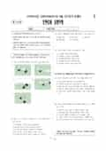

문제지


시험지를 먼저 풀어 보세요. 등급컷·표준점수·난이도는 흐리게 가려 뒀어요.
정답 변경 없음
이의신청 3문항 · 평가원 상세 답변 3문항
평가원 답변
서술자의 직접 개입이 나타난다는 말은 독자가 서술자의 존재를 분명하게 인지할 수 있도록 서술이 진행되고 있다는 뜻입니다. 지문에서 다음 두 대목을 보겠습니다. (ㄱ) 오소리는 본디 마음이 순한지라, 서대쥐의 대접이 심히 관후함을 보고 처음에 발발하던 마음이 춘산에 눈 녹듯이 스러지는지라. (ㄴ) 너구리는 본래 음흉한 짐승이라 심중에 생각하되 … 하며 소매를 떨치고 거짓 노왈(ㄱ)과 (ㄴ)에서 서술자는 등장인물에 대한 직접적인 평가, 앞선 상황에 대한 판단, 인물의 심리가 변화하는 상황에 대한 요약 등을 통해 작품에 폭넓게 개입하면서 자기 존재를 드러내고 있습니다. 편집자적 논평은 서술자가 직접 개입하는 여러 가지 방식 가운데 하나일 뿐입니다. 언어 영역
평가원 답변
이 글을 근거로 하여 발명 동아리 회원 모집의 홍보 문구를 만들고자 하는 것은 이 글이 발명의 이론인 트리즈 이론을 설명하고 있기 때문입니다. 트리즈 이론에서는 발명을 위하여 일반적인 경험이 필요한 것이 아니라, 모순을 발견하여 그것을 극복해야 한다고 설명합니다. 따라서 발명 동아리 홍보 문구에서는 트리즈 이론의 이런 특성을 잘 드러내어야 합니다.이 글에서는 트리즈 원리를 사용하는 데 상당한 훈련과 경험이 필요하다고 했을 뿐이지, 단순히 훈련과 경험을 통해 발명이 가능하다고 한 것은 아닙니다. 발명에 경험이 필요하다는 명시적인 진술이 이 글에 나타나 있지 않다는 점에서 ②는 정답이 될 수 없습니다. 언어 영역
평가원 답변
질의하신 내용을 정리하면 정답이 ③이라는 것과 ‘추상화된 것’이라는 말의 의미가 무엇이냐 하는 것으로 요약할 수 있습니다.먼저 정답이 ③이라는 근거로 ‘해바라기’가 ‘꽃’의 하위어이고 ‘씨앗’은 추상화된 존재라고 하는 것은 문제의 취지를 잘못 이해한 것입니다. ‘해바라기’가 ‘꽃’의 하위어인 것은 분명하지만 ‘꽃’과 ‘씨앗’은 <보기>의 조건과 맞지 않습니다. <보기>에서는 분명히 ⓑ가 어떤 단어 W에서 의미가 추상화되었다고 했으므로 W가 ‘꽃’이 될 경우 ⓑ는 ‘씨앗’이 될 수가 없습니다. 그리고 ‘추상화된 것’이라는 말의 의미에 대해 말씀을 드리겠습니다. 먼저 ‘추상화’라는 말의 사전적인 의미는 다음과 같습니다.추상화(抽象化)「명」추상적인 것으로 만들거나 되거나 함.‘추상적’이라는 말을 다시 찾아보면 아래와 같이 뜻풀이되어 있습니다.추상적(抽象的)「관」「명」어떤 사물이 직접 경험하거나 지각할 수 있는 일정한 형태와 성질을 갖추고 있지 않은. 또는 그런 것. 문제의 초점은 W의 ‘꿈’이 추상화된 것이 ⓑ의 ‘꿈’인가 하는 점입니다. ‘꿈’의 국어사전 뜻풀이는 다음과 같습니다.꿈 「명」「1」잠자는 동안에 깨어 있을 때와 마찬가지로 여러 가지 사물을 보고 듣는 정신 현상. 「2」실현하고 싶은 희망이나 이상. 위의 뜻풀이에 따르면 W의 ‘꿈’은 ‘잠자는 동안 깨어 있을 때와 마찬가지로 여러 가지 사물을 보고 듣는 정신 현상’이고 ⓑ의 ‘꿈’은 ‘실현하고 싶은 희망이나 이상’입니다. 위의 ‘추상적’의 뜻풀이를 보면 ‘추상적’이라는 것은 직접 경험하거나 지각할 수 없는 것이라고 할 수 있습니다. 따라서 실제로 느끼고 겪을 수 있는 구체적인 현상인 W의 ‘꿈’이 추상화되어 ⓑ의 ‘희망’이나 ‘이상’으로 의미가 확장되었다고 말할 수 있습니다. 물론 결과적으로 ‘꿈’은 다의어가 되므로 ‘다의어가 되었다’고 할 수도 있습니다. 그런데 굳이 ‘추상화’라고 표현한 것은 ‘길(도로)→길(방법)’과 같이 의미가 확장되는 경우 ‘의미의 추상화’가 주요한 요인으로 작용한다는 사실을 이해하는 것이 중요하기 때문입니다.
발행 기관: 한국교육과정평가원(KICE). 파일 위치: 이 사이트가 보관한 사본. 저작권은 발행 기관에 있습니다. 원본과 다르거나 게시 중단이 필요하면 연락처로 알려 주세요. 등급컷 출처 구분은 데이터 원칙에서 설명합니다.